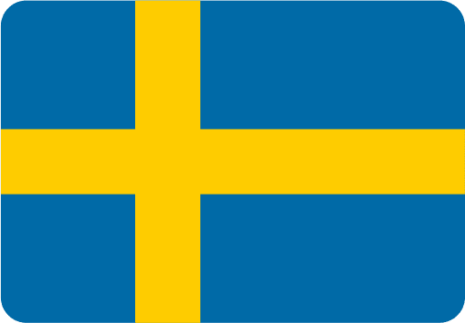
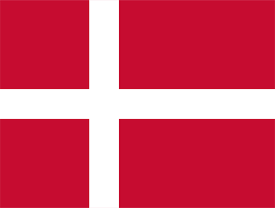
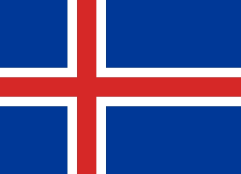

Svenskene har gitt verden ABBA, IKEA og, selvfølgelig, snusen. Nordmenn omfavner det som om det var brunost, men hva med Island? Er det en hemmelig snusning som foregår i islendingenes bakgårder?
Island, landet med geysirer og majestetiske fossefall, skiller seg ut når det kommer til snusvaner. Er det på grunn av noe magisk fjellvann eller kanskje trollene som bebor øya? Vel, kanskje ikke, men det kan hende at lovene har en finger med i spillet.
Finland Satser på Snusfri Fremtid: Målet er Under 5% Brukere innen 2030
I praksis jobber det finske helsedepartementet hardt for å sikre at færre enn 5 prosent av den voksne befolkningen i Finland bruker snus og lignende produkter innen 2030. Allerede i 1995, da Finland ble medlem av EU, ble det forbudt å selge snus i landet. I dag, i 2023, er Sverige det eneste EU-landet der det er tillatt å selge snus.
Finland er på en tydelig kurs mot en snusfri framtid, og det ser ut til at de holder fast ved sitt engasjement for en tobakksfri befolkning.
Snusfenomenet i Norden: En Oversikt
Hva betyr tallene egentlig?
Grafen fungerer som et kart over nordiske snusvaner. Nordmenn, med sine 15%, troner på toppen av snusfjellet, mens svenskene prøver å holde tritt. Island derimot, virker som om de har funnet et annet fjell å bestige.
Ifølge Helsedirektoratet rapporterer rundt 15 prosent av befolkningen i Norge, i aldersgruppen 16–74 år, daglig bruk av snus i 2022.
SSB.no konkluderer med at Norge leder over svenskene, med 15% nordmenn som snuser sammenlignet med totalt 12% i Sverige, basert på tall fra 2018 statistiska centralbyrån.
Bildet hentet fra UX-wing ©I Danmark bruker seks prosent av alle mellom 15 og 24 år pulverisert tobakk eller tyggetobakk, til tross for et salgsforbud i følge snusinfo.no.
Bildet hentet fra UX-wing ©I Finland, hvor salg av snus ikke er tillatt, nevner Snusinfo at likevel fem prosent av finske menn snuser, noe som kan bidra til det generelt høye forbruket av tobakk.
Bildet hentet fra UX-wing ©Ruv.is avslører at 22% av unge islendinger snuser, og 1 av 3 av dem gjør det daglig. Islandske myndigheter bekrefter dette snusfenomenet, men hvorfor holder de det så hemmelig? Er snusforbudet et dekke for øyas sanne snusidentitet?
Bildet hentet fra UX-wing ©